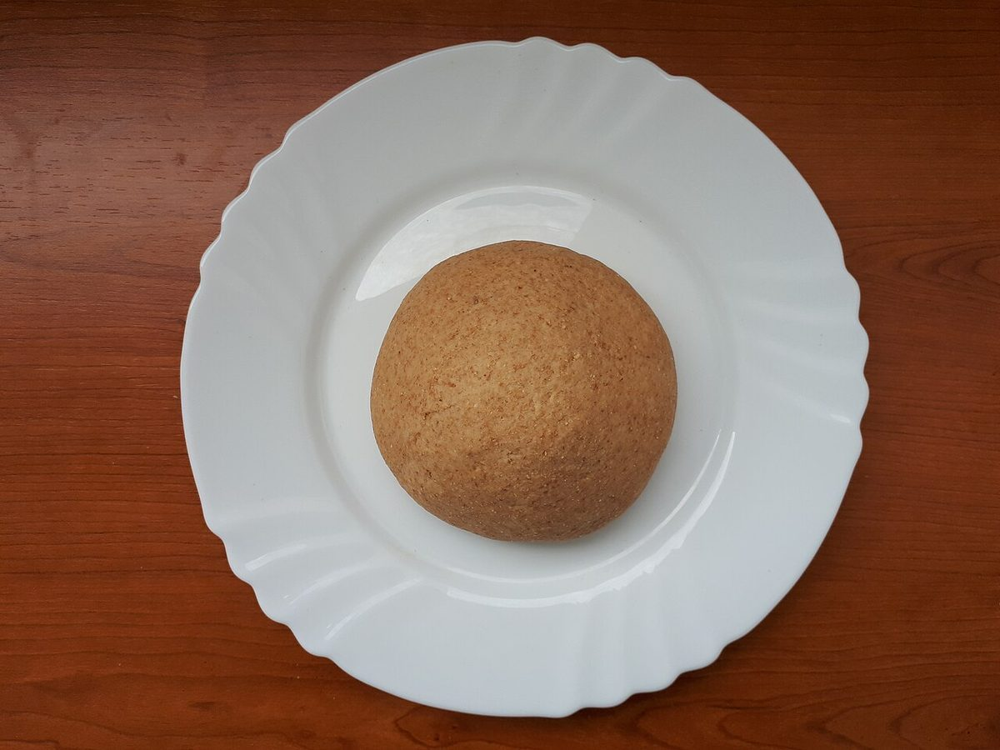
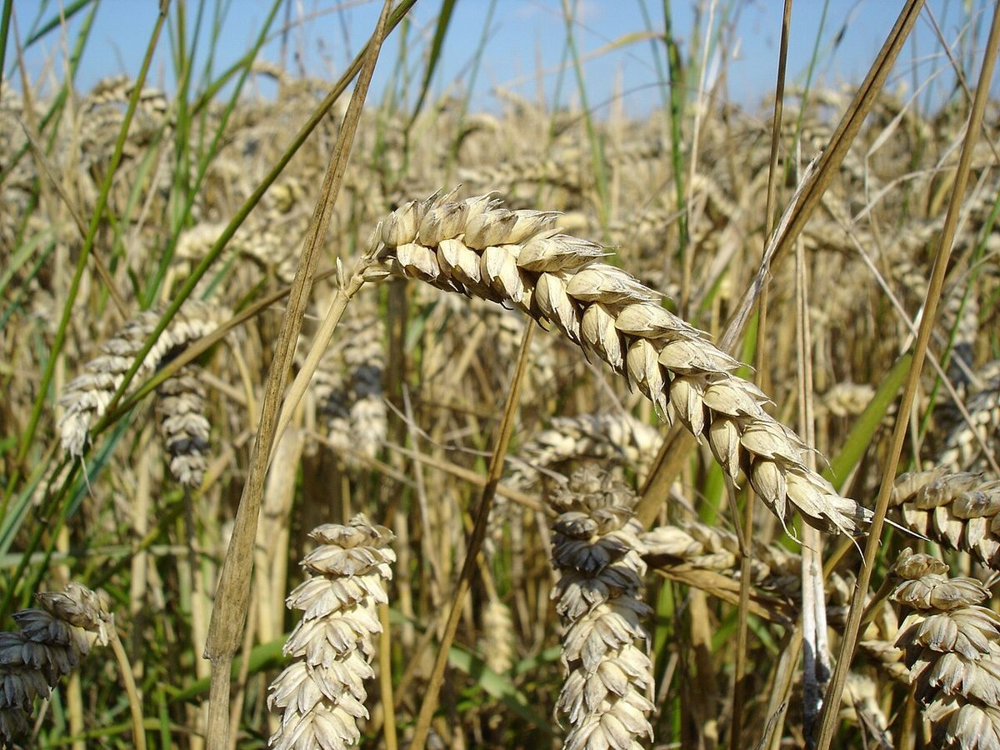

店のこと
店のこと
お店について確認できているのは、所在地とInstagramのアカウントだけです。
確認できていること
- 店名は「なみなみBAKE」、業種はベーカリー(焼き菓子・パン)
- 所在地は愛媛県新居浜市土橋1丁目3-29(〒792-0043)
- 電話番号はなし。連絡はInstagramから
- 営業時間・定休日・メニュー・価格・ご予約・駐車場は準備中

想像してみる
器の縁と、ふつうの日
この部分は制作側が想像して書いたもので、実際のお店の様子や考えとは関係がありません。
「なみなみ」と聞いて、制作側は器の縁まで満ちた粉や、皿の真ん中に丸くおさまった生地を思い浮かべました。もうひとつ、「並」という字からは、特別な日ではないふつうの日のパンを連想しました。どちらも店の実際の姿ではなく、写真を選ぶための手がかりです。


